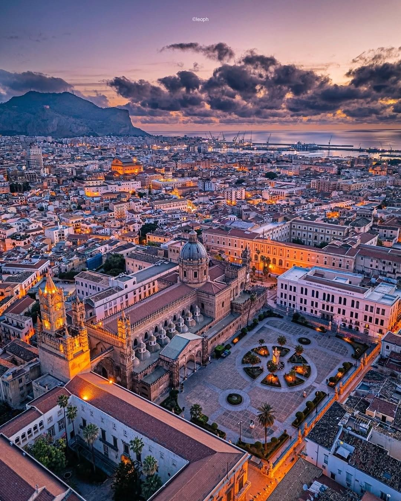

La Terra, la Pietra e il Fuoco
La Sicilia non è semplicemente un'isola al centro del Mediterraneo; è un continente sospeso, un luogo dove la geografia si fa destino. Per capire le piazze che abbiamo scelto, bisogna prima capire la materia di cui sono fatte. Il territorio siciliano è un corpo vivo che ha dettato legge agli architetti di ogni epoca, offrendo colori e consistenze diverse a seconda della provincia che si attraversa.
Nella parte orientale, domina il Fuoco. L'Etna, "a Montagna", non è solo uno sfondo, ma un fornitore di materia prima. La pietra lavica, scura, porosa e indistruttibile, ha forgiato il carattere di città come Catania, rendendo le piazze eleganti e austere al tempo stesso. Spostandosi verso il sud-est, nel Val di Noto, la terra cambia voce: qui domina la Pietra Calcare, una roccia tenera e chiara che, sotto le mani degli scalpellini barocchi, è diventata flessibile come un ricamo. È questa pietra che, assorbendo la luce del sole, la restituisce calda e dorata al tramonto, trasformando le piazze in lanterne a cielo aperto.
Nell'entroterra, invece, la Sicilia si fa Grano e Argilla. Qui le piazze sono nate per dominare le valli, arroccate su montagne che guardano l'infinito. È una Sicilia più silenziosa, fatta di colori terrosi, dove il legame tra l'abitato e la campagna è così stretto che non si capisce dove finisca la roccia della montagna e dove inizi il muro della chiesa.
Mille Popoli, un’Unica Anima
Se la terra ha fornito la materia prima, la storia ha dato la forma. Raccontare il territorio siciliano significa sfogliare un album in cui ogni pagina è stata scritta da una lingua diversa, in un esercizio di stratificazione unico al mondo. Nessun'altra isola ha visto una tale densità di civiltà sovrapporsi, scontrarsi e, infine, fondersi in un’armonia che sfida la logica.
Le piazze della nostra "Agorà Sicana" portano ancora i segni profondi di questo passaggio. I Greci ci hanno lasciato il concetto di spazio pubblico come luogo della democrazia e del sacro; gli Arabi hanno trasformato il territorio in un giardino, insegnandoci il valore dell'ombra e dei vicoli freschi che sfociano all'improvviso in piazze sfolgoranti; i Normanni hanno portato la solennità delle cattedrali-fortezza, simboli di un potere che voleva toccare il cielo. Ma è con l’epoca del Barocco che la piazza siciliana assume la sua identità definitiva: quella del Teatro.
In Sicilia, lo spazio pubblico non è mai stato pensato solo per il transito, ma per la rappresentazione. Le facciate delle chiese non sono semplici muri, ma quinte sceniche; i balconi nobiliari non sono solo affacci, ma palchi d'onore decorati con mascheroni grotteschi. Questo territorio ha imparato a vivere la vita pubblica come una recita continua, dove la bellezza è la scenografia e la cittadinanza è la compagnia teatrale. Questa eredità trasforma ogni borgo in una capitale dell'estetica, dove il marmo e la pietra calcarea sembrano prendere vita sotto lo sguardo dei passanti.
Ogni piazza è legata a un'essenza specifica che ne racconta il distretto: a Trapani è l'odore del sale e delle alghe che risale dal porto; a Palermo è il fumo degli aromi speziati che si mescola all'incenso; a Ragusa è il profumo del carrubo e del formaggio che matura nelle grotte iblee. Il territorio "invade" la città attraverso i mercati, che sono le ultime vere Agorà rimaste, dove il baratto e la "vanniata" (il grido del mercante) sono riti che si ripetono identici da secoli, unendo la produzione delle campagne al cuore del centro storico.
Ma il territorio è anche Fede e Festa, il momento in cui la piazza smette di essere un disegno architettonico e diventa un corpo unico. È il tempo delle processioni, quando i fiori delle vallate decorano i fercoli dei Santi e i suoni delle bande coprono il rumore della modernità. In quei momenti, il passato non è una memoria polverosa, ma una forza che nutre il presente, ricordandoci che ogni siciliano è il custode di un segreto millenario.
Concludere questo viaggio nel territorio significa capire che la Sicilia non è un luogo da visitare, ma uno stato d'animo da abitare. Le nove piazze di Agorà Sicana non sono che i portoni d'ingresso: dietro ognuna di esse ci sono chilometri di strade bianche, di coste selvagge e di colline dorate che aspettano solo di essere scoperti da chi sa ancora guardare il mondo con meraviglia.